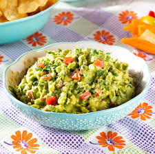

Guacamole Recipe:

Description:
Get ready to "avo" great time with this easy homemade guacamole recipe! Creamy avocados are mashed to perfection and mixed with zesty lime juice, tangy red onions, juicy tomatoes, and a hint of garlic. It's a fiesta in your mouth! Whip up this crowd-pleasing dip and watch it disappear faster than you can say "guac and roll"!
Ingredients:
- 2 ripe avocados
- 1 lime
- 1/4 cup diced red onion
- 1 small tomato, diced
- 2 tablespoons chopped fresh cilantro
- 1 clove garlic, minced
- Salt and pepper to taste
Steps:
- Cut the avocados in half and remove the pits. Scoop out the flesh into a bowl.
- Squeeze the juice of the lime over the avocado and mash it with a fork or potato masher until it reaches your desired consistency.
- Add the diced red onion, tomato, cilantro, and minced garlic to the bowl.
- Season with salt and pepper to taste.
- Mix everything together until well combined.
- Taste and adjust the seasoning if needed.
- Serve immediately with tortilla chips or as a topping for tacos, nachos, or sandwiches.